Predloga#
Avtor: Tinkara Robek
Datum izdelave: 2024-05-20
Koda seminarja: S46
Vhodni podatek#
Povezava do datoteke z vhodnim podatkom: S46
Rezultati analiz#
Začetek dela in osnove ugotovitve#
Delo začnemo s poravnavo Emboss Water; poravnamo dodeljeno zaporedje in zaporedje vektorja pUC57 (klonirni vektor pri E.coli, dolžine 2710 bp). 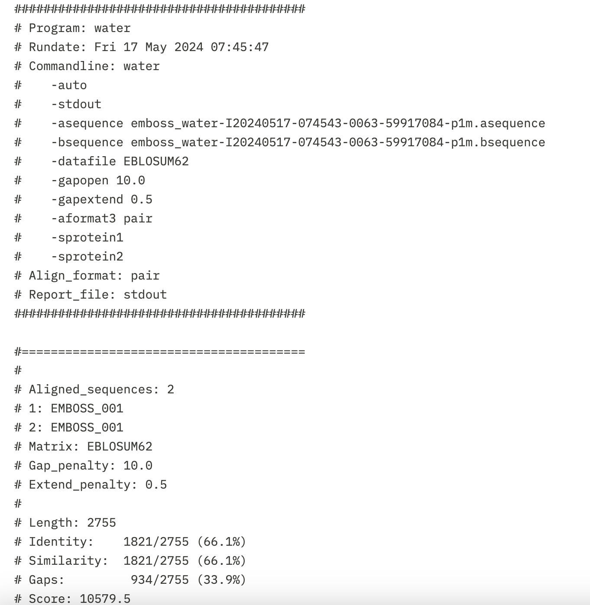 Iz dobljene poravnave tako kopiramo del med poravnavo, dolg 884bp. To zaporedje vnesemo v blastx (iskanje s pretvorbo nukleotidnega zaporedja v aminokislinsko), izberemo podatkovno zbirko Metagenomic proteins(env_nr) - iskanje po metagenomski zbirki (ta je ponavadi slabše anotirana …). Rezultati analize so sledeči: pojavi se 100 zaporedij, med katerimi najustreznejše vrednosti doseže zaporedje za homoserin kinazo (Max Score: 402, Total Score: 484, Query Cover: 79%, E-value: 7e-140, Percent Identity: 99.49%). S 99.49% ujemanjem se naš protein izkaže za zelo podobnega homoserin kinazi (izhaja iz oglijikovodičnega metagenoma), zato iskanje in analize nadaljujemo na podlagi tega proteina, saj je to najbolj smiseln rezultat. Preko kode (“Accession Code”) dostopamo do Genbanka. 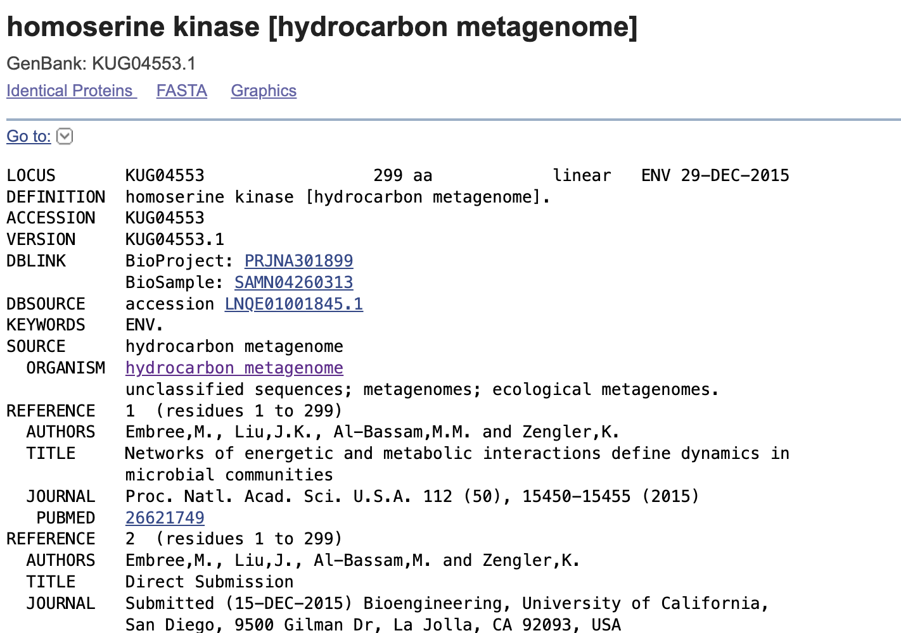 Razberemo da naš zapis zajema 299 aminokislinskih ostankov od celotnih 310 za strukturo, ki je deponirana v Uniprotu.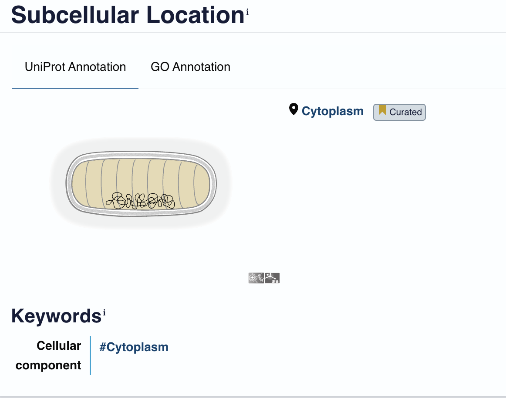 Omenjeno homoserin kinazo najdemo v Uniprotu (P00547 · KHSE_ECOLI). Zapis, ki ga kodira gen thrB, je dolg 310 aminokislinskih ostankov, ima 33.624 Da. Struktura homoserin kinaze je znana in deponirana v zbirki PDB, le da gre za prisotnost omenjenega proteina pri drugem orgamizmu (Methanocaldococcus jannaschii). 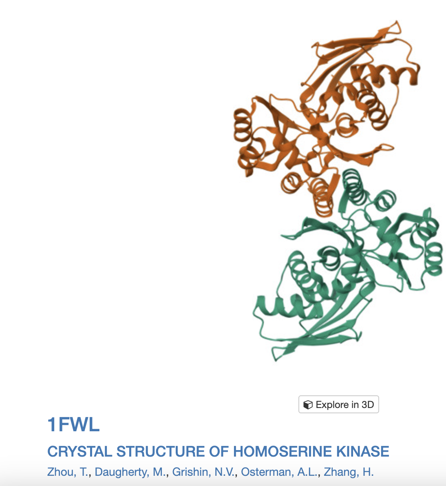 Pri E. Coli pa je ta z visoko zanesljivostjo predvidevana z Alphafoldom (sklepamo po barvni lestvici - skoraj celotna struktura je namreč obarvana temno modro). 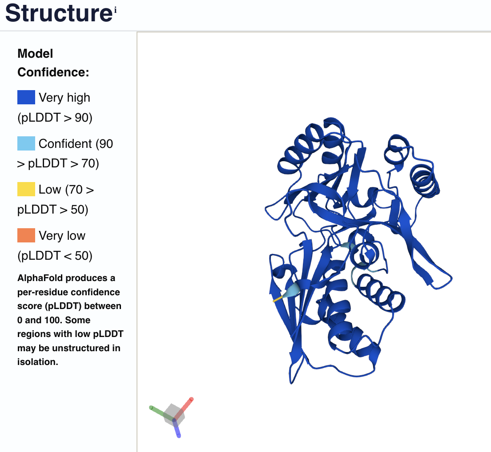 Protein je prisoten pri bakterijah (E.coli, sev K12), arhejah in rastlinskih plastidih (ogljikovodični metagenom). Nahaja se v citosolu.
Aminokislinsko zaporedje dobljenega proteina#
MIRVRAPATTANLGPGFDTLGMALELYLQVEAEFSQSGIEIVFSGARDRSIMESPQENLIYKAMNFVFRQ ARYSPTGLYIEIDNDIPIGKGLGSSAAAIVAGMYSANRLIGDPFLPAELLHWAVKMEGHADNIVPSITGG LAVAMVYEGEVYYQQVRPGGQLGVVVAVPDFILPTEQSRAVLPRNVPMQNAVWNLQRACFLLASLQNGDF SNLAKAMDDMIYQPFRKVFIPGFDQILQSAIEAGAMGVALSGAGPSILAFTAPGQEMDIGKAMQKAFNEV GVSAQVLYLKPDLLGVQYY
Domene#
Interpro navaja dve signifikantni domeni; GHMP kinazna N-končna domena (Gly-Ser bogata regija, vezava ATP), GHMP kinazna C-končna domena (vezava nukleotidov). 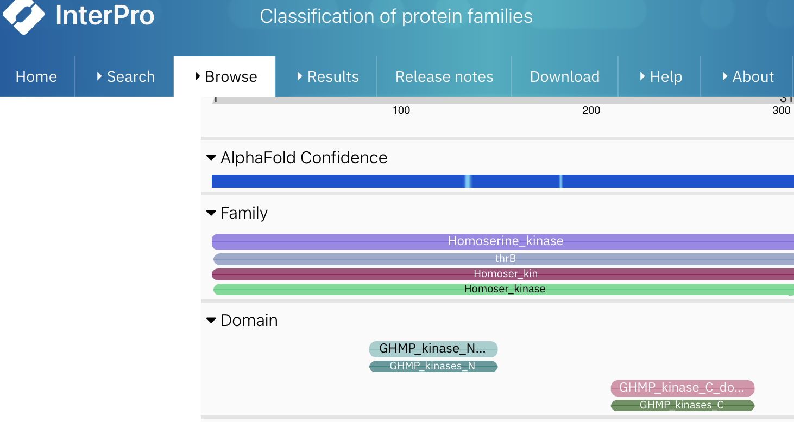 Domeni očitno sicer ne izstopata (na Uniprotu niti nista izpostavljeni, zato se je potrebno posluževati še Interpro).
Posttranslacijske modifikacije#
V Uniprotu ne zasledimo specifičnih posttranslacijskih modifikacij tega proteina (sicer pri PTM/Proccessing).
Funkcija proteina#
Sodeluje pri biosintezi aminokislin (sinteza L-Thr iz L-Asp), protein je vključen v pretvorbo aspartata (vključen v sintezo esencialnih aminokislinskoh ostankov). Je ATP-vezavni protein; vezavno mesto za ATP je na mestih 91-101. 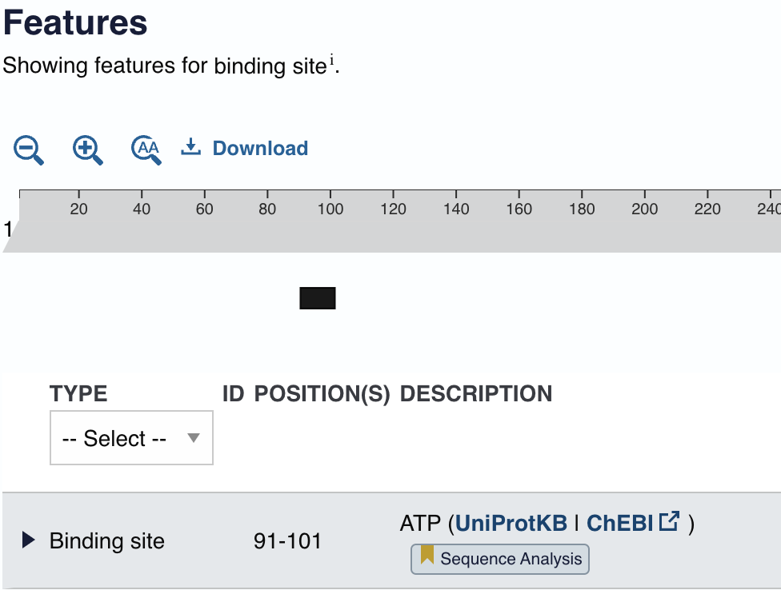 Kot pove že ime, ima homoserin-kinazno aktivnost (je encim skupine transferaz); katalizira od ATP odvisno fosforilacjo L-homoserina v L-homoserin fosfat. Katalitska aktivnost je 500-krat višja z L-homoserinom kot D-homoserinom. Fosforilira tudi hidroksilno skupino gama-ogljika L-homoserinskih analogov, pri katerih je funkcionalna skupina na mestu alfa karboksilna, estrska ali hidroksimetilna. Protein je katalitsko aktiven (kinazna aktivnost; prenos fostatne skupine (donorska molekula je v tem primeru ATP) na substrat (akceptorji so alkoholne skupine)), katalizira reakcijo ATP + L-homoserin = ADP + H+ + O-fosfo-L-homoserin.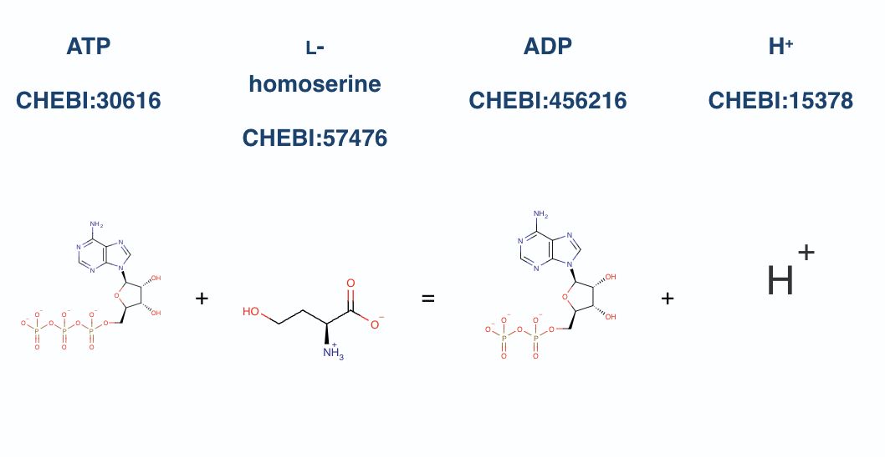
Sorodni proteini#
Spada v družino GHMP kinaz, ki nasploh obsega od ATP-odvisne kinaze; vključuje homoserin kinaze, galaktokinaze, mevalonat kinaze - te predvsem sintetizirajo izoprene in aminokisline, sodelujejo pa tudi v določenih drugih metabolnih procesih. Homoserin kinaza, kodirana z genom thrB je poleg pri E. coli prisotna tudi pri mnogih drugih mikroorganizmih (npr. Staphylococcus aureus, Mycobacterium sp. Bacillus subtilis, Clostridium tetani …), med katerimi je veliko patogenih (morda se bo lahko začeo razmišljati v smeri potencialne tarče). Te podatke in proteine omenjene družine lahko poiščemo na Uniprotu.
Če z orodjem EMBOSS Dotmacher primerjamo zaporedje homoserin kinaze iz organizmov E.Coli in iz Methanocaldococcus jannaschii (izvorni organizem deponirane strukture v PDB). Opazimo veliko podobnost (izrazit vzorec diagonale z nekaj prazninami - ostanki prisotni le pri enem izmed zaporedij). 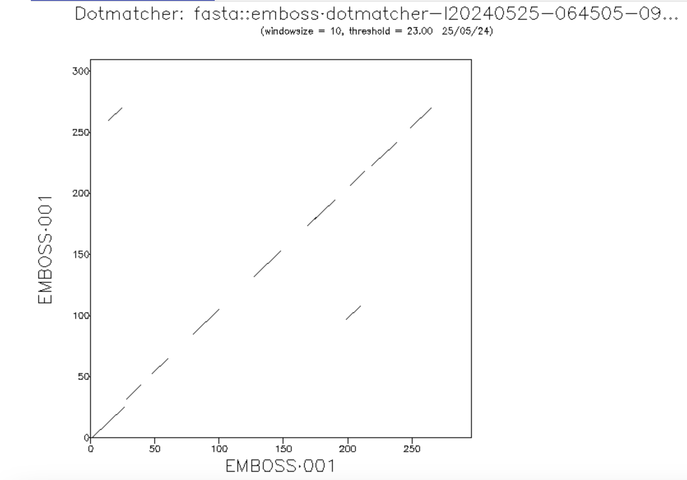
V družino GHMP kinaz spada tudi galaktokinaza, ki je prav tako prisotna pri E.coli sevu 12, protein najdemo na Uniprotu. Z zanimanjem preverimo tudi podobnost tega proteina našemu, tako obe zaporedji vnesemo v Dotmatcher, rezultat pa pokaže, da si proteina nista podobna. 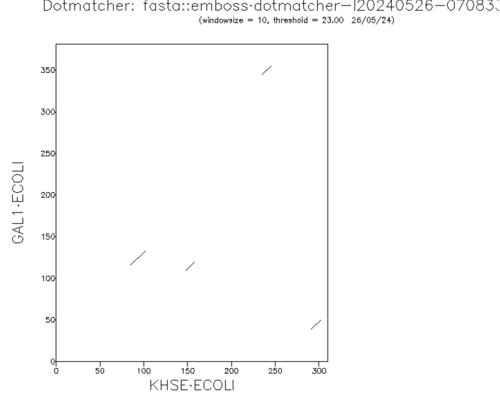
Če izvedemo iskanje s PSI-blastom, opazimo podobnosti s hipotetičnimi protieni GOS (isti metagenom) in proteini morskih sedimentov, a zadetki niso zelo relevantni. Zato spremenimo parametre in iščemo le po podatkovni bazi dobro anotiranih proteinov (Swissprot/Uniprot), namesto po metagenomski zbirki. 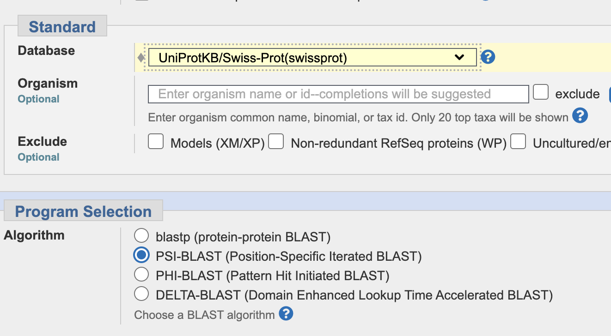 Orodje zaženemo npr. 7-krat (v mojem primeru), novi rezultati se še dalje pojavljajo. Če poravnana zaporedja prenesemo, nam to omogoča nadaljnje analize.
V Uniprotu izberemo 10 zaporedij za homoserin kinazo pri različnih mikroorganizmih, katera uporabimo pri delu z Orodjem Clustal Omega.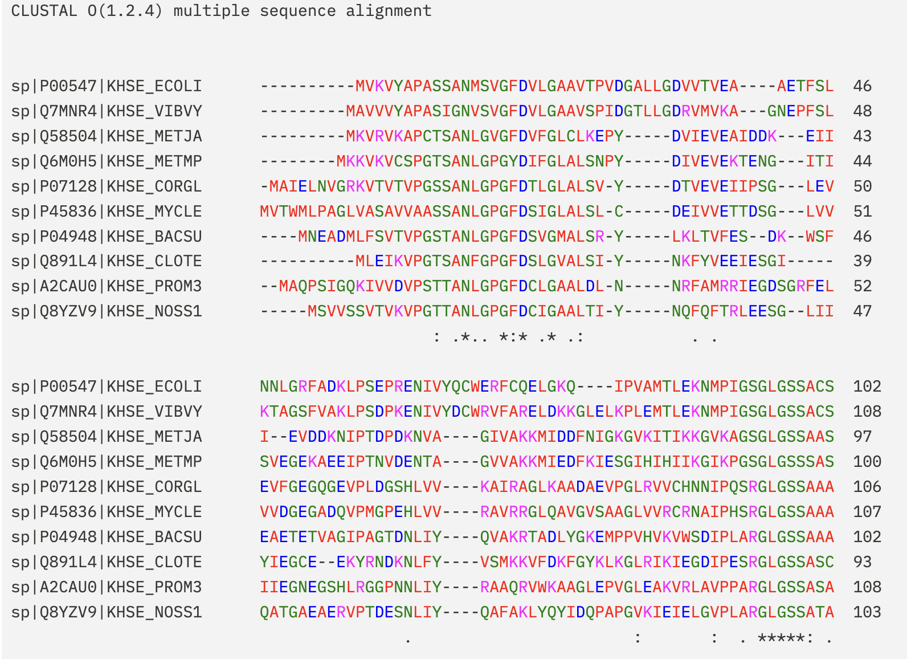 Orodje nam poda podatke za izdelavo filogenetskega drevesa z orodjem phylo.io, s čimer si lahko ogledamo potek evolucije preučevanega proteina (od skupnih prednikov do današnjih). 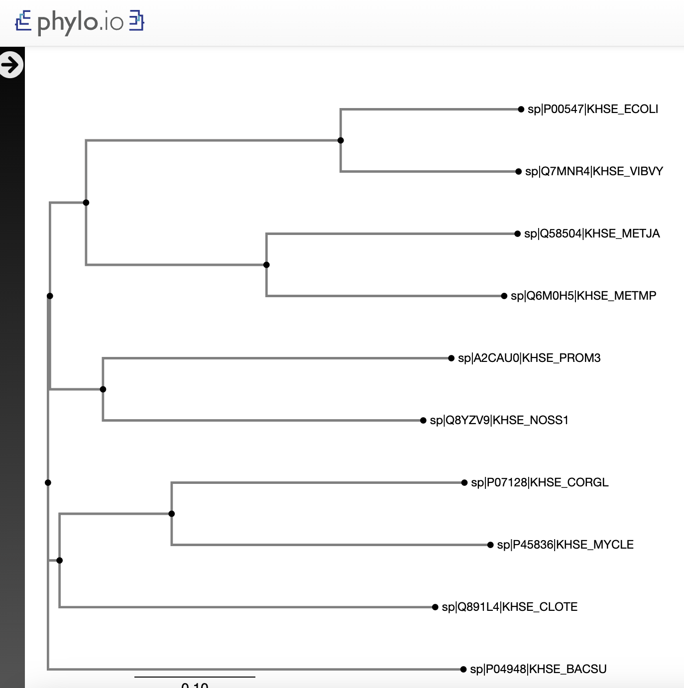
V Uniprotu razberemo, da je homoserin kinaza prisotna tudi pri evkationtih; rižu (Oryza sativa subsp. japonica), kjer opravlja isto funkcijo, a struktura ni eksperimentalno določena (slabša anotacija, podani trije rezultati, Alphafold struktura je predvidena z manjšo zanesljivostjo). Protein ima določeni sicer enaki domeni kot izhodiščna homoserin kinaza. Če direktno v Uniprotu primerjamo po eno zaporedje z našim vidimo, da prihaja do ohranjenosti določenih delov, pri čem ne moremo z zanesljivostjo sklepati, če se ohranja aktivno mesto, saj v primeru riža, to ni z gotovostjo določeno. Priložena je slika izseka poravnave, kjer se sicer nahaja aktivno mesto proteina pri E.coli. 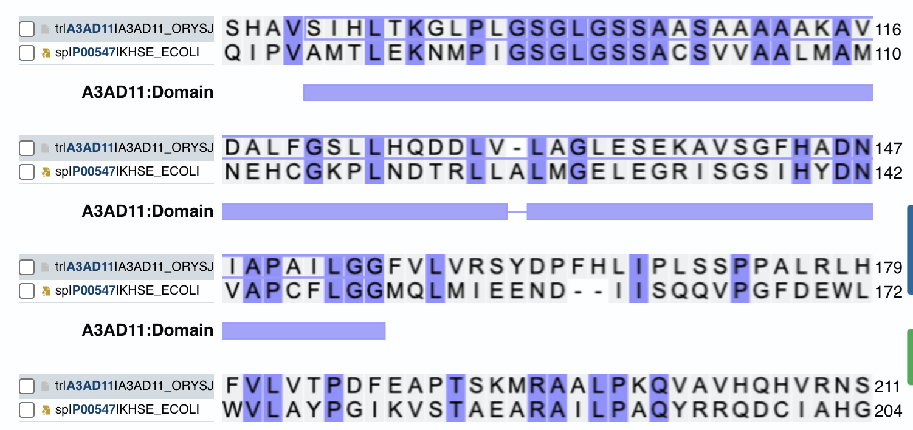
Ohranjenost in mutacije#
Če v Uniprotu pregledamo homoserin kinaze večih organizmov vidimo, da se med organizmi zagotovo ohranja ATP-vezavno mesto, saj se s tem ohranja funkcija proteina (vezava ATP, ki omogoča kinazno aktivnost). Prisotnost mutacij vpliva na katalitsko učinkovitost encima (mutacija na mestu 235: R->L: zmanjšana učinkovitost, R->H povečana) in kinazno aktivnost (mesta 139 in 203). Tej podatki so dostopni na Uniprotu. 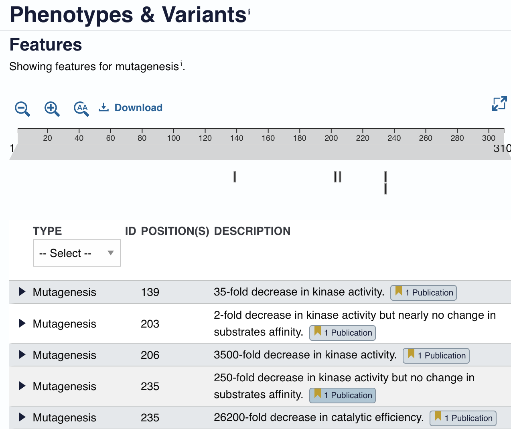 Ohranjene domene med organizmi identificiramo s pomočjo orodja COBALT. Z orodjem analiziramo zaporedja, do katerih pridemo s PSI-blastom (naložimo v nekompresirani obliki). Izriše se nam grafični prikaz, kjer je opazno, da prihaja do signifikantne ohranjenosti med uporabljenimi zaporedji, seveda pa tudi do razlik (glede na vzorec grafa, obarvanost glede na ohranjenost; rdeči predeli označujejo signifikantno ohranjenost regij, modri pa slabšo - slika prikazuje odsek začetnih nekaj poravnav). 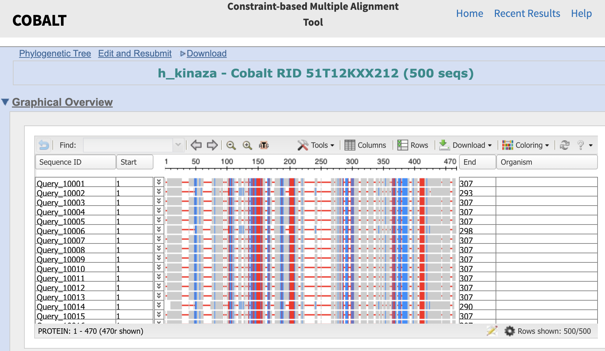
Medproteinske interakcije#
Potencialna neposredna funkcijska povezanost z drugimi proteini za homoserin kinazo ni izpostavljena. Sklepam pa, da posredno sodeluje z drugimi proteini vključenimi v metabolizem in biosintetske procese.
Predvidevanje strukture: Alphafold#
Ob prenosu FASTA formata zaporedja iz Genbanka v Alphafold3, pridemo do predvidene strukture proteina. Skoraj v celoti je napovedana je z visoko zanesljivostjo (glede na barvno lestvico - temno modra), z izjemo ene zaanke (rumena) in končnih regij (bolj dinamični). 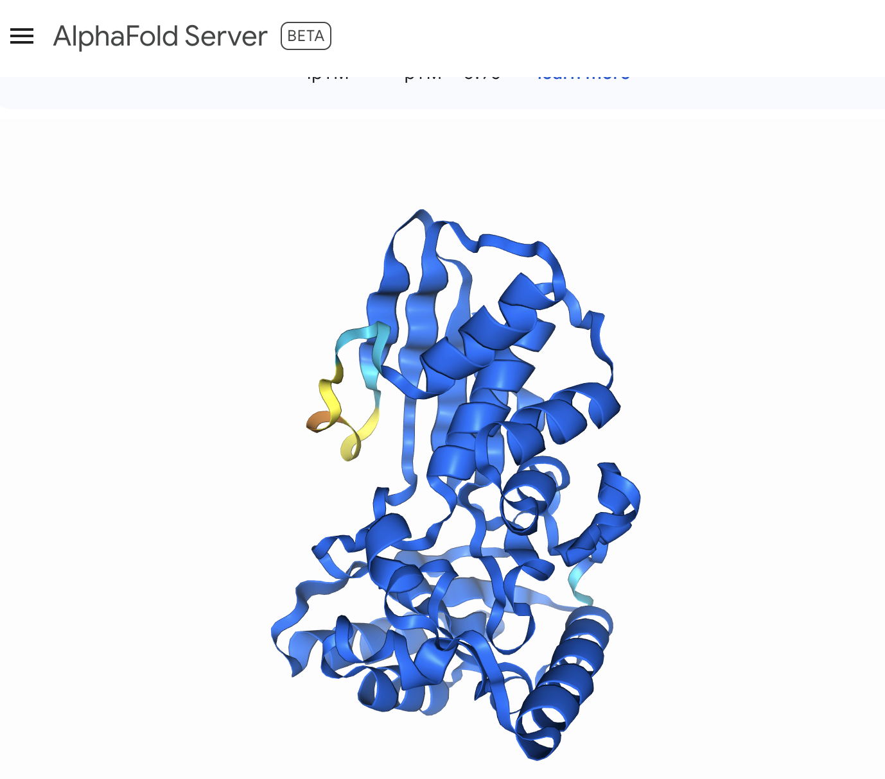 Strukturo je mono odpreti tudi z drugimi orodji namenjenimi vizualizaciji, npr. ChimeraX, kjer je struktura nazorno prikazana (smeri poteka beta trakov). 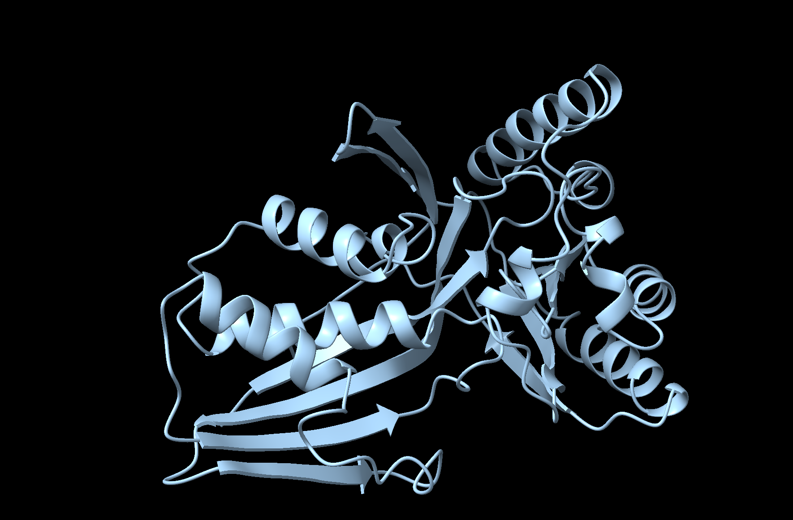